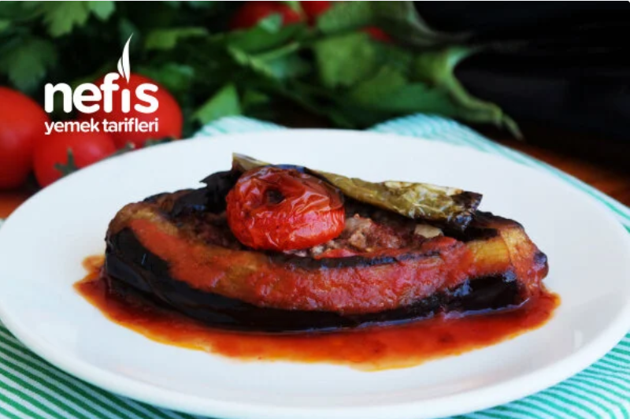

Karnıyarık
Ana Malzemeler
- 6 adet küçük boy patlıcan (büyük ise ikiye bölebilirsiniz)
- 3 adet sivri biber
Kıymalı Harç İçin
- 2 adet orta boy soğan
- 2 adet domates
- 2 adet sivri biber
- 2 diş sarımsak
- Sıvı yağ
- Tuz
- Karabiber
- Kırmızıbiber
- 200 gr kıyma
- 1 çay bardağı sıcak su
Sosu İçin
- 1 yemek kaşığı salça
- 1 su bardağı sıcak su
Nasıl Yapılır?
- Patlıcanları çizgili soyup, yarım saat yağ çekmemesi için tuzlu suda bekletin.
- İyice yıkadıktan sonra suyunu havlu ile çektirin ve az yağda kızartın. 3 adet biberi de yağda kızartın.
- Daha sonra aynı tavada doğranmış soğanları kavurun, kıymayı ekleyerek bir müddet daha kavurun ve biberleri, sarımsağı ekleyerek 2 dakika daha kavurun.
- Küp küp doğramış olduğunuz 2 adet domatesi, tuzu, baharatları ekleyerek karıştırın.
- Üzerine bir çay bardağı su ekleyerek 5 dk kaynatın.
- Tepsiye patlıcanların ortalarını keserek yerleştirin ve bu kesiklerden patlıcanın içine bastırarak iç malzemesine yer açın ve malzeme ile patlıcanları doldurun.
- Doldurduğunuz patlıcanların üzerine ortadan ikiye kestiğiniz çeri domatesi ya da 1 adet domatesi eşit büyüklükte olacak şekilde paylaştırın ve kızarttığınız biberlerden birer tane koyun.
- Ayrı bir yerde 1 kaşık salçayı, 1 su bardağı sıcak suda ezerek patlıcanların aralarına dökün. Kıymalar çıkmasın diye üzerine dökmeyin.
- Daha sonra 170 derece de ısıttığınız fırına sürerek 20-25 dk pişirin. Dilerseniz bu işlemi pilav tenceresi gibi bir tencerede ocakta yapabilirsiniz. Aynı sürede tencerede de pişecektir.